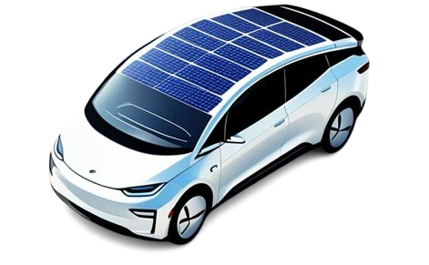

Residential solar panel
Residential solar panels use sunlight to generate electricity for homes. This renewable energy solution helps reduce electricity costs and promotes a more sustainable environment.

Transportation
Solar panels mounted on vehicles convert sunlight into electrical energy to support battery charging. This helps increase the vehicle's driving range while reducing reliance on conventional energy sources.

Solar Power Plant
Solar power plants use large numbers of solar panels to convert sunlight into electricity on a large scale. They provide clean, renewable, and cost-effective energy for businesses, communities, and national power grids.

Powering small devices
Portable solar panels generate electricity from sunlight to power small electronic devices. This convenient and eco-friendly solution helps reduce the use of disposable batteries and supports sustainable energy consumption.

Public infrastructure
Solar energy provides power for public facilities such as street lights, traffic signals, and electric vehicle charging stations. This helps improve energy efficiency, lower operating costs, and reduce environmental impact.